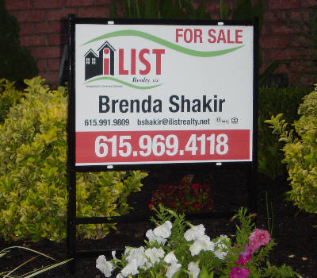

Brenda Shakir
Principal broker / Owner
615.969.4118
615.991.9809
615.827.0070 fax
bshakir@ilistrealty.net

Brenda Shakir
Principal broker / Owner
615.969.4118
615.991.9809
615.827.0070 fax
bshakir@ilistrealty.net
The are many advantages of using the iList Realty Flat Fee MLS listing service:
A licensed broker will list your home in the Middle Tennessee Multiple Listing Service (MLS)
This is the same MLS that is available to all Realtors seeking homes for buyers
Additionally, your home listing will appear across the internet on sites such as Yahoo.com, AOL, Realtor.Com, RealTracs.Com, and more
You pay a Flat Fee for listing your home with us. You save thousands of dollars in listing commissions
You offer a “Buyers Agent Commission” (you choose the amount, usually between 2 and 3%), that will only be payable if an agent brings you a buyer who purchases your home
You retain the right to sell your home yourself and avoid the Buyers Agent Commission, entirely, if you find the buyer yourself
iList can provide you, upon your request, with high impact marketing suggestions and advice on the best listing price to achieve your goal
There are no hidden charges, and we won’t try to sell you anything. We are focused on providing you a simple, convenient and inexpensive means to market your home to the largest number of buyers possible!
Led by Brenda Shakir's vision to provide Nashville and Middle Tennessee residents greater control over the process of buying and selling their home, we have developed three pricing options with varying levels of broker interaction. We are dedicated to Nashville and the Middle Tennessee region. Nashville is one of the fastest growing cities in this area, and the local real estate market continues to experience substantial activity. Major corporations are finding the benefits of doing business and living in Middle Tennessee and Nashville very attractive. We agree, and are very excited about the opportunity to provide our customers with the best home selling experience possible.